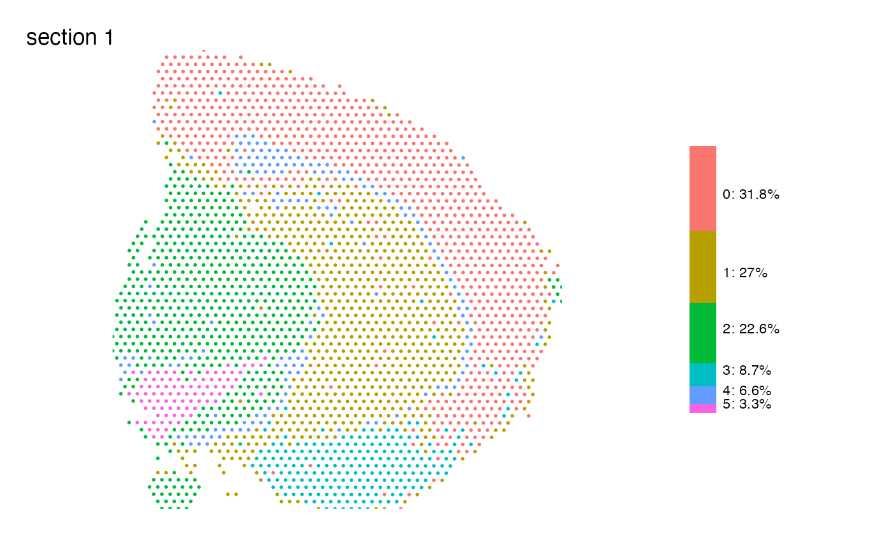

Map features spatially and add a summary plot next to it
MapLabelsSummary.RdThis function is a wrapped for MapLabels which adds a
stacked bar plot showing the sample's proportions of each category in
the selected column next to the spatial feature plot.
Usage
MapLabelsSummary(
object,
column_name,
bar_display = "percent",
bar_width = 1.2,
bar_label_size = 3,
image_use = NULL,
coords_use = "raw",
crop_area = NULL,
pt_size = 1,
pt_alpha = 1,
pt_stroke = 0,
hide_legend = TRUE,
section_number = NULL,
label_by = NULL,
ncol = NULL,
colors = NULL,
override_plot_dims = FALSE,
return_plot_list = FALSE,
drop_na = FALSE,
...
)Arguments
- object
An object
- column_name
A character specifying a meta data column holding the categorical feature vector.
- bar_display
a character vector of length 1 specifying one of "percent" or "count" for the bar plot to display. Default set to "percent".
- bar_width
a numeric value specifying width of the bar plot. Default set to 1.2.
- bar_label_size
a numeric value specifying text size of the bar plot labels. Default set to 3.
- image_use
A character specifying image type to use.
- coords_use
A character specifying coordinate type to use.
- crop_area
A numeric vector of length 4 specifying a rectangular area to crop the plots by. These numbers should be within 0-1. The x-axis is goes from left=0 to right=1 and the y axis is goes from top=0 to bottom=1. The order of the values are specified as follows:
crop_area = c(left, top, right, bottom). The crop area will be used on all tissue sections and cannot be set for each section individually. using crop areas of different sizes on different sections can lead to unwanted side effects as the point sizes will remain constant. In this case it is better to generate separate plots for different tissue sections.- pt_size
A numeric value specifying the point size passed to
geom_point- pt_alpha
A numeric value between 0 and 1 specifying the point opacity passed to
geom_point. A value of 0 will make the points completely transparent and a value of 1 will make the points completely opaque.- pt_stroke
A numeric specifying the point stroke width
- hide_legend
logical specifying whether to hide the label legend for the spatial plot. Set to (
TRUE) by default.- section_number
An integer select a tissue section number to subset data by
- label_by
A character specifying a column name in
objectwith labels that can be used to provide a title for each subplot. This column should have 1 label per tissue section. This can be useful when you need to provide more detailed information about your tissue sections.- ncol
An integer value specifying the number of columns in the output patchwork.
- colors
A character vector of colors to use for the color scale. The number of colors should match the number of labels present.
- override_plot_dims
A logical specifying whether the image dimensions should be used to define the plot area. Setting
override_plot_dimscan be useful in situations where the tissue section only covers a small fraction of the capture area, which will create a lot of white space in the plots. The same effect can be achieved with thecrop_areabut the crop area is instead determined directly from the data.- return_plot_list
logical specifying whether the plots should be return as a list of
ggplotobjects. Ifreturn_plot_list = FALSE(default), the plots will be arranged into apatchwork- drop_na
A logical specifying if NA values should be dropped
- ...
Arguments passed to other methods
See also
Other spatial-visualization-methods:
AnglePlot(),
FeatureViewer(),
ImagePlot(),
MapFeatures(),
MapFeaturesSummary(),
MapLabels(),
MapMultipleFeatures()
Examples
# Prepare Seurat object
se <- readRDS(system.file("extdata/mousebrain",
"se_mbrain",
package = "semla"))
se <- se |>
NormalizeData() |>
ScaleData() |>
FindVariableFeatures() |>
RunPCA() |>
FindNeighbors(reduction = "pca", dims = 1:10) |>
FindClusters(resolution = 0.2)
#> Centering and scaling data matrix
#> PC_ 1
#> Positive: Nrgn, Olfm1, Cck, Nptxr, Rtn1, Snca, Nov, Tmsb4x, Lamp5, Egr1
#> Crym, Cpne6, Coro1a, Arc, Hpca, Sst, Nr4a1, Npy, Chgb, Neurod6
#> Snap25, Myh7, Uchl1, Eef1a2, Cort, Grp, Stmn2, Rprm, Spink8, Mfge8
#> Negative: Mbp, Plp1, Apod, Mobp, Ptgds, Mog, Mal, Mag, Cnp, Aldh1a1
#> Opalin, Tcf7l2, Ddc, Lhx1os, Slc6a3, Ret, Th, Slc18a2, Sncg, Drd2
#> Chrna6, Slc10a4, Spp1, En1, Dlk1, Calb2, Hbb-bs, Pvalb, Col1a2, Tnnt1
#> PC_ 2
#> Positive: Myoc, Gfap, Col1a2, Fmod, Slc13a4, Hba-a1, Hbb-bt, Slc6a20a, Hba-a2, Hbb-bs
#> Acta2, Tagln, Mgp, Ogn, Vtn, H2-Aa, Lyz2, Cd74, Myl9, Dcn
#> Myh11, Ptgds, Cytl1, H2-Eb1, Hmgcs2, Clu, Mfge8, Emp1, Npy, Cnn1
#> Negative: Th, Uchl1, Slc18a2, En1, Slc10a4, Slc6a3, Chrna6, Stmn2, Ret, Snap25
#> Drd2, Dlk1, Ddc, Scg2, Sncg, Eef1a2, Rtn1, Chga, Pcp4, Calb2
#> Mobp, Mbp, Chgb, Fabp5, Plp1, Pvalb, Mog, Mal, Mag, Snca
#> PC_ 3
#> Positive: Trbc2, Arc, Egr1, Myl4, Nr4a1, Mbp, Mobp, Pvalb, Plp1, Opalin
#> Mog, Mal, Cnp, Mag, Snap25, Lamp5, Ighm, Tcf7l2, Cplx3, Tgm3
#> Ighg2c, Pcp4, Hpca, Ly6d, Eef1a2, Tnnt1, Chga, Neurod6, Prph, Ctgf
#> Negative: Nnat, Slc18a2, Dlk1, Slc6a3, Slc10a4, En1, Th, Chrna6, Dcn, Sncg
#> Cpne7, Drd2, Ddc, Ret, Hpcal1, Ecel1, Cpne6, Col1a2, Trh, Calb2
#> Cd24a, Fmod, Mgp, Snca, Lypd1, Slc13a4, Fibcd1, Crym, Spink8, Slc6a20a
#> PC_ 4
#> Positive: Nr4a1, Arc, Lamp5, Egr1, Myl4, Trbc2, Chrna6, Tagln, En1, Snap25
#> Th, Slc18a2, Acta2, Col1a2, Myh11, Fmod, Hba-a2, Slc10a4, Slc6a3, Slc13a4
#> Ret, Tgm3, Hbb-bt, Slc6a20a, Ighm, Hbb-bs, Hba-a1, Vtn, Mgp, Drd2
#> Negative: Spink8, Fibcd1, Tmsb4x, Nnat, Lefty1, Crym, Cpne7, Nos1, Dcn, Cpne6
#> Grp, Homer3, Htr3a, Tac1, Fabp5, C1ql2, Trh, Opalin, Mog, Plp1
#> Mag, Calb2, Ecel1, Gfap, Cnp, Tcf7l2, Lypd1, Vgll3, Hpcal1, Mal
#> PC_ 5
#> Positive: Pcp4, Tcf7l2, Snap25, Uchl1, Eef1a2, Chga, Stmn2, Lhx1os, Calb2, Scg2
#> Fabp5, Bok, Prkcd, Pvalb, Cartpt, Chgb, Tnnt1, Gpx3, Slc20a1, Rtn1
#> C1ql2, Spp1, Hpcal1, Ptgds, Pitx2, Lypd1, Aldh1a1, Ecel1, Vtn, Nme7
#> Negative: En1, Chrna6, Th, Slc18a2, Slc10a4, Ddc, Lefty1, Arc, Slc6a3, Neurod6
#> Grp, Nov, Lamp5, Fibcd1, Nr4a1, Drd2, Spink8, Vip, Myl4, Ret
#> Egr1, Dlk1, Nrgn, Gfap, Trbc2, Tgm3, Myh7, Tac2, Sncg, Npy
#> Computing nearest neighbor graph
#> Computing SNN
#> Modularity Optimizer version 1.3.0 by Ludo Waltman and Nees Jan van Eck
#>
#> Number of nodes: 2560
#> Number of edges: 85218
#>
#> Running Louvain algorithm...
#> Maximum modularity in 10 random starts: 0.9096
#> Number of communities: 6
#> Elapsed time: 0 seconds
# Plot clusters
MapLabelsSummary(se, column_name = "seurat_clusters", override_plot_dims = TRUE)
